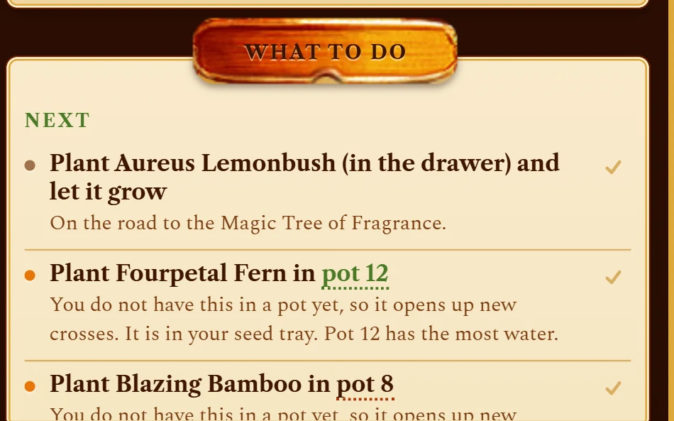
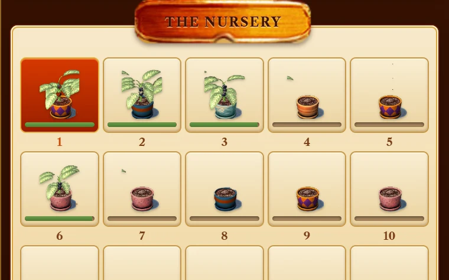
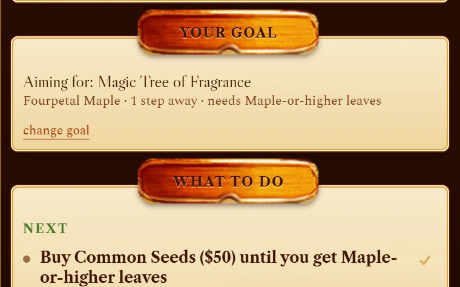
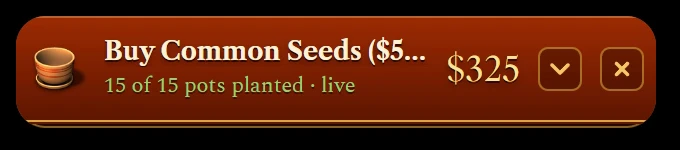

Names the pots
"Plant the Fourpetal Fern in pot 12." "Cross pot 3 with pot 7." Real pot numbers you can act on, not a chart to decode.
A free companion for Plant Tycoon
Isola Field Journal sits on top of your game, reads your nursery as you play, and tells you which pots to cross, what to plant next, and when no cross can get you there.
On your phone? The app runs on a Windows PC, so open this page there. The breeding calculator works right here.
You need your own copy of Plant Tycoon on Steam. An unofficial fan project, with no account and no ads.
Every seed is the average of its two parents, rounded up: leaves and flowers each on their own.
Their seed grows Ananas leaves (4 + 12) ÷ 2 = 8
So no cross can ever beat your best plant. If you have crossed your two best plants for an hour and nothing new turns up, that is arithmetic, not bad luck. The only way up is new stock: seed packets from the shop, or Mutation Liquid.
The journal knows this rule, works out every one of the 529 species from it, and tells you the moment you hit the ceiling instead of letting you grind.

"Plant the Fourpetal Fern in pot 12." "Cross pot 3 with pot 7." Real pot numbers you can act on, not a chart to decode.

Cash, all fifteen pots, water, health, growth and every seed in storage, five times a second. Nothing to export, nothing to type in.

It picks the closest of the six Magic Plants, or the one you choose, and lists every purchase, planting and cross, ticking each off as it happens in your game.

Folded, it is a slim bar over the game. Ctrl+E opens it without leaving the game, and one click launches Plant Tycoon fullscreen with the panel on top.
Windows may say "Windows protected your PC", because the app is not code-signed: signing costs a yearly fee and this app is free. Click More info, then Run anyway.
Open Isola Field Journal and launch the game from it. The game opens fullscreen with the panel on top. If the panel cannot find your game, it says so.
The panel follows along as you play. Press Ctrl+E to open or fold it.
No. It is for Windows 10 and 11, with the PC version of Plant Tycoon.
It is tested with the Steam version. Other PC copies installed in the usual places should work too; if the panel cannot find the game, it tells you where it looked.
Neither. It never writes anything, and it never clicks anything. It tells you what to do; you still play.
Windows warns about every program that is not code-signed, and signing costs a yearly fee. This app is free, so it is not signed. Click "More info", then "Run anyway".
Download the latest version from this page and install it over the old one. Hover over the panel's close button to see which version you have. The app never checks online by itself.
Yes. No ads, no account, nothing to buy, now or later.
Try the breeding calculator: cross any two plants, find the shortest route to the one you want, and see the recipe for all six Magic Plants.
Open the breeding calculator